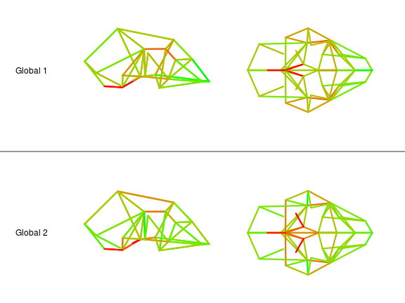
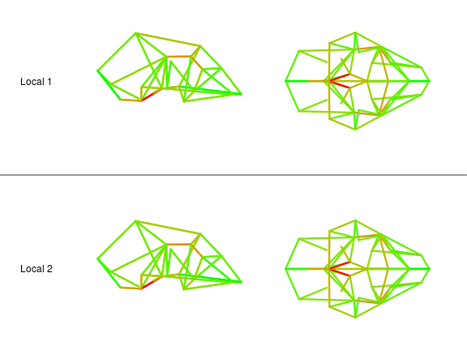

A Phylogenetic Analysis of Covariance Structure in the Skull of Anthropoid Primates
Guilherme Garcia & Gabriel Marroig
University of São Paulo - Brasil
Skull Development

Hallgrímsson et al. (2008)
Limits to Changes in Covariance Structure
Canalization;
Stabilizing Selection.
- developmental systems;
- functional interactions.
We expect that changes in covariance structure between sister lineages will display a non-random pattern consistent with developmental and functional interactions.
Objective
We investigate the evolution of skull size-shape covariance structure in anthropoid primates in a phylogenetic framework.
Sample
5108 individuals;
109 species.
Measurements
log Centroid Size;
Local shape variables (Márquez et al., 2012):
- log volume transformations;
- TPS function.
Landmarks


Skull Regions

Linear models to correct for fixed effects:
- sexual dimorphism, subspecific variation.
Bayesian framework (MCMCglmm; Hadfield, 2010):
- posterior distribution of P-matrices.

Diversity Decomposition

Pavoine et al. (2008)
Eigentensors

Hine et al. (2006)
Phylogenetic Principal Components

Jombart et al. (2010)
pPCA Details
Spectral decomposition of the matrix
\[ \frac{1}{2n}\mathbf{X}^t(\mathbf{W} + \mathbf{W}^t)\mathbf{X} \]
\(n\): number of tips;
\(\mathbf{X}\): data for tips (here, principal matrix projections);
\(\mathbf{W}\): phylogenetic distance matrix.
Reconstructing Matrix Variation

Matrix Variation along pPC Axes
Selection Response Decomposition (SRD; Marroig et al., 2011);
posterior distribution of differences in trait-specific covariance structure.
Covariance Matrix Diversity

Tests for Distribution of Matrix Diversity
| Value | Exp. | Dist. | P | |
|---|---|---|---|---|
| Single Node | 0.106 | 0.029 | 13.456 | < 10-4 |
| Few Nodes | 0.248 | 0.139 | 13.545 | < 10-4 |
| Tip/Root Skewness (Topology Only) | 0.632 | 0.505 | 12.197 | < 10-4 |
| Tip/Root Skewness (Branch Lengths) | 0.381 | 0.505 | -11.067 | < 10-4 |
pPCA Eigenvalue Distribution


Global pPC1


Global pPC2


Global pPCs over Shape

Local pPC1


Local pPC2


Local pPCs over Shape
